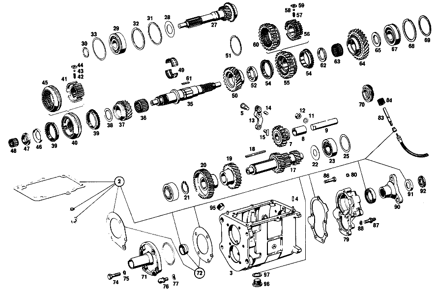

| № | Артикул | Название | Кол. | Примечание | Ограничение |
|---|---|---|---|---|---|
| 100 | A 117 260 12 11 | КОРПУС КП | 1 | Рулевое управление: ВлевоКоробка передач [037] 016,018,019 FROM TRANSMISSION 041342; 057,058 FROM TRANSMISSION 001648 | |
| 101 | N 000939 010012 | - Винт | 6 | Коробка передач | |
| 103 | A 117 263 15 02 | ПРОМЕЖУТОЧНЫЙ ВАЛ | 1 | Коробка передач [038] 016,018 UP TO CHASSIS 049593; 057,058 UP TO CHASSIS 006293 | |
| 107 | A 117 991 07 68 | Призматическая шпонка | 1 | Коробка передач | |
| 108 | A 117 263 03 13 | ШЕСТЕРНЯ | 1 | Коробка передач | |
| 109 | A 117 263 08 10 | ШЕСТЕРНЯ | 1 | Коробка передач | |
| 110 | A 115 263 07 52 | Дистанционная шайба | 1 | Коробка передач | |
| 111 | A 001 981 71 25 | ШАРИКОПОДШИПНИК | - | Коробка передач | |
| 111 | A 004 981 42 01 | Подшипник с цил. роликами | 1 | Коробка передач [012] 016 FROM CHASSIS 027622 ALSO INSTALLED ON, SEE FOOTN.11;018 FROM CHASSIS 028985 ALSO INSTALLED ON,SEE FOOTN.56;019 FROM CHASSIS 029326 [011] 026411, 026486, 026494, 026966, 026980, 026988, 027081, 027147, 027489, 027490, 027492, 027496, 027497, 027499- 027501, 027504, 027518, 027520- 027537, 027539- 027553, 027555- 027557, 027559, 027561- 027567, 027569, 027570, 027572- 027576, 027578- 027588, 027590- 027597, 027599- 027621. [056] 027638, 027756, 027764, 027992, 028237, 028251, 028290, 028666, 028673, 028675, 028677, 028682- 028684, 028687- 028691, 028693, 028700- 028703, 028707- 028713, 028715- 028718, 028720, 028722, 028724- 028726, 028729, 028730, 028732- 028735, 028737, 028738, 028742- 028744, 028748- 028751, 028754- 028761, 028764, 028768- 028770, 028772, 028774, 028775, 028777, 028780- 028785, 028789- 028793, 028795, 028798, 028800, 028801, 028804, 028805, 028807- 028809, 028811- 028823, 028826, 028827, 028829- 028833, 028835- 028838, 028841, 028844- 028850, 028852- 028868, 028870, 028872- 028875, 028877, 028878, 028880- 028885, 028891- 028898, 028900- 028905, 028907, 028909- 028940, 028942, 028944- 028947, 028949- 028974, 028976- 028978, 028983. | |
| 115 | A 117 260 19 20 | ПРИВОДНОЙ ВАЛ | 1 | Коробка передач [402] БОЛЬШЕ НЕ ПОСТАВЛЯЕТСЯ | |
| 116 | A 186 262 00 66 | Маслозащитное кольцо | 1 | Коробка передач | |
| 118 | A 309 262 00 26 | Шлицевая гайка | 1 | Коробка передач | |
| 121 | A 186 262 04 51 | Проставочное кольцо | 1 | Коробка передач | |
| 122 | A 136 994 06 35 | Пруж. стопорное кольцо | 1 | 1.90 MM Коробка передач | |
| 123 | A 136 262 06 52 | Компенсационная шайба | 1 | 0.10 MM Коробка передач | |
| 125 | A 309 262 09 05 | ВТОРИЧНЫЙ ВАЛ | 1 | Коробка передач [402] БОЛЬШЕ НЕ ПОСТАВЛЯЕТСЯ [012] 016 FROM CHASSIS 027622 ALSO INSTALLED ON, SEE FOOTN.11;018 FROM CHASSIS 028985 ALSO INSTALLED ON,SEE FOOTN.56;019 FROM CHASSIS 029326 [011] 026411, 026486, 026494, 026966, 026980, 026988, 027081, 027147, 027489, 027490, 027492, 027496, 027497, 027499- 027501, 027504, 027518, 027520- 027537, 027539- 027553, 027555- 027557, 027559, 027561- 027567, 027569, 027570, 027572- 027576, 027578- 027588, 027590- 027597, 027599- 027621. [056] 027638, 027756, 027764, 027992, 028237, 028251, 028290, 028666, 028673, 028675, 028677, 028682- 028684, 028687- 028691, 028693, 028700- 028703, 028707- 028713, 028715- 028718, 028720, 028722, 028724- 028726, 028729, 028730, 028732- 028735, 028737, 028738, 028742- 028744, 028748- 028751, 028754- 028761, 028764, 028768- 028770, 028772, 028774, 028775, 028777, 028780- 028785, 028789- 028793, 028795, 028798, 028800, 028801, 028804, 028805, 028807- 028809, 028811- 028823, 028826, 028827, 028829- 028833, 028835- 028838, 028841, 028844- 028850, 028852- 028868, 028870, 028872- 028875, 028877, 028878, 028880- 028885, 028891- 028898, 028900- 028905, 028907, 028909- 028940, 028942, 028944- 028947, 028949- 028974, 028976- 028978, 028983. | |
| 126 | A 117 260 11 44 | ШЕСТЕРНЯ | 1 | Коробка передач [402] БОЛЬШЕ НЕ ПОСТАВЛЯЕТСЯ | |
| 128 | A 115 262 16 34 | Кольцо синхронизатора | 2 | Коробка передач | |
| 129 | A 120 262 23 62 | Упорная шайба | 1 | Коробка передач | |
| 130 | A 004 981 07 10 | Сепаратор иг. подшипника | 2 | Коробка передач | |
| 132 | A 115 260 49 45 | Корпус синхронизатора | 1 | Коробка передач | |
| 135 | A 115 262 12 35 | - СИНХРОНИЗАТОР | - | Коробка передач [402] БОЛЬШЕ НЕ ПОСТАВЛЯЕТСЯ [034] БОЛЬШЕ НЕ ПОСТАВЛЯЕТСЯ | |
| 136 | A 180 993 41 01 | пружина | 3 | Коробка передач | |
| 137 | N 005401 306500 | Шар | 3 | 6.5mm Коробка передач | |
| 138 | A 115 262 01 40 | Поводок | 3 | Коробка передач | |
| 140 | A 004 981 08 10 | ПОДШИПНИК ИГОЛЬЧАТЫЙ | 1 | Коробка передач | |
| 141 | A 117 260 07 44 | ШЕСТЕРНЯ | 1 | Коробка передач [402] БОЛЬШЕ НЕ ПОСТАВЛЯЕТСЯ | |
| 143 | A 115 262 09 62 | ШАЙБА УПОРНАЯ | 1 | 4.0 MM Коробка передач [402] БОЛЬШЕ НЕ ПОСТАВЛЯЕТСЯ | |
| 144 | A 115 262 15 34 | КОЛЬЦО СИНХРОНИЗАТОРА | 2 | Коробка передач | |
| 146 | A 117 260 33 45 | Корпус синхронизатора | 1 | Коробка передач | |
| 148 | A 115 262 14 23 | - СКОЛЬЗ. МУФТА СИНХРОНИЗ. | - | Рулевое управление: ВлевоКоробка передач [402] БОЛЬШЕ НЕ ПОСТАВЛЯЕТСЯ [034] БОЛЬШЕ НЕ ПОСТАВЛЯЕТСЯ | |
| 149 | A 117 262 04 35 | - СИНХРОНИЗАТОР | - | Коробка передач [402] БОЛЬШЕ НЕ ПОСТАВЛЯЕТСЯ [034] БОЛЬШЕ НЕ ПОСТАВЛЯЕТСЯ | |
| 150 | A 180 993 41 01 | пружина | 3 | Коробка передач | |
| 151 | N 005401 306500 | - Шар | 3 | 6.5mm Коробка передач [012] 016 FROM CHASSIS 027622 ALSO INSTALLED ON, SEE FOOTN.11;018 FROM CHASSIS 028985 ALSO INSTALLED ON,SEE FOOTN.56;019 FROM CHASSIS 029326 [011] 026411, 026486, 026494, 026966, 026980, 026988, 027081, 027147, 027489, 027490, 027492, 027496, 027497, 027499- 027501, 027504, 027518, 027520- 027537, 027539- 027553, 027555- 027557, 027559, 027561- 027567, 027569, 027570, 027572- 027576, 027578- 027588, 027590- 027597, 027599- 027621. [056] 027638, 027756, 027764, 027992, 028237, 028251, 028290, 028666, 028673, 028675, 028677, 028682- 028684, 028687- 028691, 028693, 028700- 028703, 028707- 028713, 028715- 028718, 028720, 028722, 028724- 028726, 028729, 028730, 028732- 028735, 028737, 028738, 028742- 028744, 028748- 028751, 028754- 028761, 028764, 028768- 028770, 028772, 028774, 028775, 028777, 028780- 028785, 028789- 028793, 028795, 028798, 028800, 028801, 028804, 028805, 028807- 028809, 028811- 028823, 028826, 028827, 028829- 028833, 028835- 028838, 028841, 028844- 028850, 028852- 028868, 028870, 028872- 028875, 028877, 028878, 028880- 028885, 028891- 028898, 028900- 028905, 028907, 028909- 028940, 028942, 028944- 028947, 028949- 028974, 028976- 028978, 028983. | |
| 152 | A 115 262 02 40 | ПОВОДОК | 3 | Коробка передач [402] БОЛЬШЕ НЕ ПОСТАВЛЯЕТСЯ | |
| 153 | A 115 262 09 62 | ШАЙБА УПОРНАЯ | 1 | 4.0 MM Коробка передач [402] БОЛЬШЕ НЕ ПОСТАВЛЯЕТСЯ | |
| 155 | A 117 262 04 11 | ШЕСТЕРНЯ | - | Коробка передач | |
| 155 | A 117 262 10 11 | ШЕСТЕРНЯ | 1 | Коробка передач [402] БОЛЬШЕ НЕ ПОСТАВЛЯЕТСЯ [012] 016 FROM CHASSIS 027622 ALSO INSTALLED ON, SEE FOOTN.11;018 FROM CHASSIS 028985 ALSO INSTALLED ON,SEE FOOTN.56;019 FROM CHASSIS 029326 [011] 026411, 026486, 026494, 026966, 026980, 026988, 027081, 027147, 027489, 027490, 027492, 027496, 027497, 027499- 027501, 027504, 027518, 027520- 027537, 027539- 027553, 027555- 027557, 027559, 027561- 027567, 027569, 027570, 027572- 027576, 027578- 027588, 027590- 027597, 027599- 027621. [056] 027638, 027756, 027764, 027992, 028237, 028251, 028290, 028666, 028673, 028675, 028677, 028682- 028684, 028687- 028691, 028693, 028700- 028703, 028707- 028713, 028715- 028718, 028720, 028722, 028724- 028726, 028729, 028730, 028732- 028735, 028737, 028738, 028742- 028744, 028748- 028751, 028754- 028761, 028764, 028768- 028770, 028772, 028774, 028775, 028777, 028780- 028785, 028789- 028793, 028795, 028798, 028800, 028801, 028804, 028805, 028807- 028809, 028811- 028823, 028826, 028827, 028829- 028833, 028835- 028838, 028841, 028844- 028850, 028852- 028868, 028870, 028872- 028875, 028877, 028878, 028880- 028885, 028891- 028898, 028900- 028905, 028907, 028909- 028940, 028942, 028944- 028947, 028949- 028974, 028976- 028978, 028983. | |
| 156 | A 117 262 02 51 | Проставочное кольцо | 1 | Коробка передач | |
| 157 | A 004 981 08 10 | ПОДШИПНИК ИГОЛЬЧАТЫЙ | 1 | Коробка передач | |
| 158 | A 115 262 25 62 | ШАЙБА УПОРНАЯ | 1 | 3.80 MM Коробка передач [402] БОЛЬШЕ НЕ ПОСТАВЛЯЕТСЯ | |
| 161 | A 115 263 09 32 | ШЕСТЕРНЯ ОБРАТНОГО ХОДА | 1 | ПРОМЕЖУТОЧНЫЙ ВАЛ Коробка передач [012] 016 FROM CHASSIS 027622 ALSO INSTALLED ON, SEE FOOTN.11;018 FROM CHASSIS 028985 ALSO INSTALLED ON,SEE FOOTN.56;019 FROM CHASSIS 029326 [011] 026411, 026486, 026494, 026966, 026980, 026988, 027081, 027147, 027489, 027490, 027492, 027496, 027497, 027499- 027501, 027504, 027518, 027520- 027537, 027539- 027553, 027555- 027557, 027559, 027561- 027567, 027569, 027570, 027572- 027576, 027578- 027588, 027590- 027597, 027599- 027621. [056] 027638, 027756, 027764, 027992, 028237, 028251, 028290, 028666, 028673, 028675, 028677, 028682- 028684, 028687- 028691, 028693, 028700- 028703, 028707- 028713, 028715- 028718, 028720, 028722, 028724- 028726, 028729, 028730, 028732- 028735, 028737, 028738, 028742- 028744, 028748- 028751, 028754- 028761, 028764, 028768- 028770, 028772, 028774, 028775, 028777, 028780- 028785, 028789- 028793, 028795, 028798, 028800, 028801, 028804, 028805, 028807- 028809, 028811- 028823, 028826, 028827, 028829- 028833, 028835- 028838, 028841, 028844- 028850, 028852- 028868, 028870, 028872- 028875, 028877, 028878, 028880- 028885, 028891- 028898, 028900- 028905, 028907, 028909- 028940, 028942, 028944- 028947, 028949- 028974, 028976- 028978, 028983. [038] 016,018 UP TO CHASSIS 049593; 057,058 UP TO CHASSIS 006293 | |
| 162 | A 136 994 06 35 | Пруж. стопорное кольцо | 1 | 1.90 MM Коробка передач | |
| 163 | A 136 262 06 52 | Компенсационная шайба | NB | 0.1 MM Коробка передач | |
| 164 | A 115 262 26 39 | Удерживающее кольцо | 1 | Коробка передач | |
| 165 | N 000137 007201 | Пружинная шайба | 4 | Коробка передач | |
| 166 | A 115 990 06 01 | болт | 4 | Коробка передач | |
| 167 | A 001 981 71 25 | ШАРИКОПОДШИПНИК | - | Коробка передач | |
| 167 | A 004 981 42 01 | Подшипник с цил. роликами | 1 | Коробка передач [012] 016 FROM CHASSIS 027622 ALSO INSTALLED ON, SEE FOOTN.11;018 FROM CHASSIS 028985 ALSO INSTALLED ON,SEE FOOTN.56;019 FROM CHASSIS 029326 [011] 026411, 026486, 026494, 026966, 026980, 026988, 027081, 027147, 027489, 027490, 027492, 027496, 027497, 027499- 027501, 027504, 027518, 027520- 027537, 027539- 027553, 027555- 027557, 027559, 027561- 027567, 027569, 027570, 027572- 027576, 027578- 027588, 027590- 027597, 027599- 027621. [056] 027638, 027756, 027764, 027992, 028237, 028251, 028290, 028666, 028673, 028675, 028677, 028682- 028684, 028687- 028691, 028693, 028700- 028703, 028707- 028713, 028715- 028718, 028720, 028722, 028724- 028726, 028729, 028730, 028732- 028735, 028737, 028738, 028742- 028744, 028748- 028751, 028754- 028761, 028764, 028768- 028770, 028772, 028774, 028775, 028777, 028780- 028785, 028789- 028793, 028795, 028798, 028800, 028801, 028804, 028805, 028807- 028809, 028811- 028823, 028826, 028827, 028829- 028833, 028835- 028838, 028841, 028844- 028850, 028852- 028868, 028870, 028872- 028875, 028877, 028878, 028880- 028885, 028891- 028898, 028900- 028905, 028907, 028909- 028940, 028942, 028944- 028947, 028949- 028974, 028976- 028978, 028983. | |
| 168 | A 115 990 09 51 | гайка | 1 | Коробка передач [012] 016 FROM CHASSIS 027622 ALSO INSTALLED ON, SEE FOOTN.11;018 FROM CHASSIS 028985 ALSO INSTALLED ON,SEE FOOTN.56;019 FROM CHASSIS 029326 [011] 026411, 026486, 026494, 026966, 026980, 026988, 027081, 027147, 027489, 027490, 027492, 027496, 027497, 027499- 027501, 027504, 027518, 027520- 027537, 027539- 027553, 027555- 027557, 027559, 027561- 027567, 027569, 027570, 027572- 027576, 027578- 027588, 027590- 027597, 027599- 027621. [056] 027638, 027756, 027764, 027992, 028237, 028251, 028290, 028666, 028673, 028675, 028677, 028682- 028684, 028687- 028691, 028693, 028700- 028703, 028707- 028713, 028715- 028718, 028720, 028722, 028724- 028726, 028729, 028730, 028732- 028735, 028737, 028738, 028742- 028744, 028748- 028751, 028754- 028761, 028764, 028768- 028770, 028772, 028774, 028775, 028777, 028780- 028785, 028789- 028793, 028795, 028798, 028800, 028801, 028804, 028805, 028807- 028809, 028811- 028823, 028826, 028827, 028829- 028833, 028835- 028838, 028841, 028844- 028850, 028852- 028868, 028870, 028872- 028875, 028877, 028878, 028880- 028885, 028891- 028898, 028900- 028905, 028907, 028909- 028940, 028942, 028944- 028947, 028949- 028974, 028976- 028978, 028983. | |
| 169 | A 117 262 07 21 | Шестерня заднего хода | 1 | Коробка передач | |
| 170 | A 115 260 06 48 | ПРИВОДНАЯ ШЕСТЕРНЯ | 1 | ПРИВОД СПИДОМЕТРА Коробка передач [012] 016 FROM CHASSIS 027622 ALSO INSTALLED ON, SEE FOOTN.11;018 FROM CHASSIS 028985 ALSO INSTALLED ON,SEE FOOTN.56;019 FROM CHASSIS 029326 [011] 026411, 026486, 026494, 026966, 026980, 026988, 027081, 027147, 027489, 027490, 027492, 027496, 027497, 027499- 027501, 027504, 027518, 027520- 027537, 027539- 027553, 027555- 027557, 027559, 027561- 027567, 027569, 027570, 027572- 027576, 027578- 027588, 027590- 027597, 027599- 027621. [056] 027638, 027756, 027764, 027992, 028237, 028251, 028290, 028666, 028673, 028675, 028677, 028682- 028684, 028687- 028691, 028693, 028700- 028703, 028707- 028713, 028715- 028718, 028720, 028722, 028724- 028726, 028729, 028730, 028732- 028735, 028737, 028738, 028742- 028744, 028748- 028751, 028754- 028761, 028764, 028768- 028770, 028772, 028774, 028775, 028777, 028780- 028785, 028789- 028793, 028795, 028798, 028800, 028801, 028804, 028805, 028807- 028809, 028811- 028823, 028826, 028827, 028829- 028833, 028835- 028838, 028841, 028844- 028850, 028852- 028868, 028870, 028872- 028875, 028877, 028878, 028880- 028885, 028891- 028898, 028900- 028905, 028907, 028909- 028940, 028942, 028944- 028947, 028949- 028974, 028976- 028978, 028983. | |
| 173 | A 117 263 04 30 | ОСЬ ШЕСТЕРНИ ЗАДНЕГО ХОДА | 1 | Коробка передач [012] 016 FROM CHASSIS 027622 ALSO INSTALLED ON, SEE FOOTN.11;018 FROM CHASSIS 028985 ALSO INSTALLED ON,SEE FOOTN.56;019 FROM CHASSIS 029326 [011] 026411, 026486, 026494, 026966, 026980, 026988, 027081, 027147, 027489, 027490, 027492, 027496, 027497, 027499- 027501, 027504, 027518, 027520- 027537, 027539- 027553, 027555- 027557, 027559, 027561- 027567, 027569, 027570, 027572- 027576, 027578- 027588, 027590- 027597, 027599- 027621. [056] 027638, 027756, 027764, 027992, 028237, 028251, 028290, 028666, 028673, 028675, 028677, 028682- 028684, 028687- 028691, 028693, 028700- 028703, 028707- 028713, 028715- 028718, 028720, 028722, 028724- 028726, 028729, 028730, 028732- 028735, 028737, 028738, 028742- 028744, 028748- 028751, 028754- 028761, 028764, 028768- 028770, 028772, 028774, 028775, 028777, 028780- 028785, 028789- 028793, 028795, 028798, 028800, 028801, 028804, 028805, 028807- 028809, 028811- 028823, 028826, 028827, 028829- 028833, 028835- 028838, 028841, 028844- 028850, 028852- 028868, 028870, 028872- 028875, 028877, 028878, 028880- 028885, 028891- 028898, 028900- 028905, 028907, 028909- 028940, 028942, 028944- 028947, 028949- 028974, 028976- 028978, 028983. [040] 016,018,019 UP TO CHASSIS 041341; 057,058 UP TO CHASSIS 001647 | |
| 174 | A 115 260 10 25 | Шестерня заднего хода | 1 | Коробка передач | |
| 175 | A 117 263 01 50 | втулка | 1 | Коробка передач | |
| 176 | A 117 260 09 31 | Тяга переключения передач | 1 | Коробка передач | |
| 177 | A 115 265 02 19 | Поводок | 1 | Коробка передач | |
| 178 | N 001481 006005 | Распорный штифт | 1 | Коробка передач | |
| 180 | A 115 260 22 16 | КРЫШКА КОРПУСА | 1 | Коробка передач [402] БОЛЬШЕ НЕ ПОСТАВЛЯЕТСЯ [038] 016,018 UP TO CHASSIS 049593; 057,058 UP TO CHASSIS 006293 | |
| 182 | A 001 981 33 85 | ШАРИК | 1 | Коробка передач [402] БОЛЬШЕ НЕ ПОСТАВЛЯЕТСЯ | |
| 185 | A 115 264 01 32 | Вал | 1 | Коробка передач [402] БОЛЬШЕ НЕ ПОСТАВЛЯЕТСЯ | |
| 191 | N 000931 010258 | Винт | 2 | КРЫШКА КАРТЕРА КОРОБКИ ПЕРЕДАЧ, ЗАДНЯЯ Коробка передач | |
| 193 | A 115 990 13 10 | БОЛТ | 2 | КРЫШКА КАРТЕРА КОРОБКИ ПЕРЕДАЧ, ЗАДНЯЯ Коробка передач [402] БОЛЬШЕ НЕ ПОСТАВЛЯЕТСЯ | |
| 194 | N 006902 007100 | Шайба | 3 | КРЫШКА КАРТЕРА КОРОБКИ ПЕРЕДАЧ, ЗАДНЯЯ Коробка передач | |
| 196 | A 115 262 11 45 | Фланец | 1 | Коробка передач | |
| 197 | A 123 990 00 60 | гайка | 1 | Коробка передач | |
| 198 | A 186 997 00 32 | ЗАГЛУШКА РЕЗЬБОВАЯ | 1 | M24X1,5 Коробка передач | |
| 199 | A 210 997 01 32 | Резьбовая пробка | 1 | Коробка передач | |
| 200 | N 007603 024105 | Уплотнительное кольцо | 1 | Коробка передач | |
| 215 | A 115 261 02 43 | Направляющая трубка | 1 | Коробка передач | |
| 217 | A 602 263 02 52 | Дистанционная шайба | NB | 0.1 MM Коробка передач [402] БОЛЬШЕ НЕ ПОСТАВЛЯЕТСЯ | |
| 219 | A 602 263 04 52 | Дистанционная шайба | NB | 0.5 MM Коробка передач | |
| 220 | N 000933 007032 | Винт | 10 | Коробка передач | |
| 221 | A 602 265 03 02 | Вилка перекл.передач | 1 | Коробка передач | |
| 224 | A 602 265 05 01 | ВИЛКА ПЕРЕКЛЮЧЕНИЯ | 1 | Коробка передач | |
| 225 | A 117 260 31 13 | КРЫШКА КОРПУСА | 1 | Коробка передач [402] БОЛЬШЕ НЕ ПОСТАВЛЯЕТСЯ | |
| 226 | A 115 262 05 50 | втулка | 2 | Коробка передач | |
| 227 | A 010 981 60 10 | Игольчатый подшипник | 1 | Коробка передач | |
| 228 | N 000007 006203 | Цилиндрический штифт | 3 | Коробка передач | |
| 234 | A 117 260 09 73 | ПАЗ ВКЛЮЧЕНИЯ | 1 | Коробка передач [402] БОЛЬШЕ НЕ ПОСТАВЛЯЕТСЯ | |
| 235 | A 117 265 04 74 | Палец | 2 | Коробка передач | |
| 236 | A 115 993 33 04 | Нажимная пружина | 1 | Коробка передач | |
| 237 | A 115 993 61 02 | Нажимная пружина | 1 | Коробка передач | |
| 238 | N 005401 999008 | - Шар | 2 | Коробка передач [402] БОЛЬШЕ НЕ ПОСТАВЛЯЕТСЯ [012] 016 FROM CHASSIS 027622 ALSO INSTALLED ON, SEE FOOTN.11;018 FROM CHASSIS 028985 ALSO INSTALLED ON,SEE FOOTN.56;019 FROM CHASSIS 029326 [011] 026411, 026486, 026494, 026966, 026980, 026988, 027081, 027147, 027489, 027490, 027492, 027496, 027497, 027499- 027501, 027504, 027518, 027520- 027537, 027539- 027553, 027555- 027557, 027559, 027561- 027567, 027569, 027570, 027572- 027576, 027578- 027588, 027590- 027597, 027599- 027621. [056] 027638, 027756, 027764, 027992, 028237, 028251, 028290, 028666, 028673, 028675, 028677, 028682- 028684, 028687- 028691, 028693, 028700- 028703, 028707- 028713, 028715- 028718, 028720, 028722, 028724- 028726, 028729, 028730, 028732- 028735, 028737, 028738, 028742- 028744, 028748- 028751, 028754- 028761, 028764, 028768- 028770, 028772, 028774, 028775, 028777, 028780- 028785, 028789- 028793, 028795, 028798, 028800, 028801, 028804, 028805, 028807- 028809, 028811- 028823, 028826, 028827, 028829- 028833, 028835- 028838, 028841, 028844- 028850, 028852- 028868, 028870, 028872- 028875, 028877, 028878, 028880- 028885, 028891- 028898, 028900- 028905, 028907, 028909- 028940, 028942, 028944- 028947, 028949- 028974, 028976- 028978, 028983. | |
| 243 | N 304017 008021 | Винт с 6-гранной головкой | 1 | M8X20 Коробка передач | |
| 244 | N 000125 008443 | Шайба | 1 | 8 MM Коробка передач | |
| 247 | A 115 260 19 73 | ПАЗ ВКЛЮЧЕНИЯ | 1 | Коробка передач | |
| 248 | A 115 260 38 73 | ПАЗ ВКЛЮЧЕНИЯ | 1 | Коробка передач | |
| 250 | A 115 261 00 66 | Воздушный клапан | 1 | Коробка передач | |
| 251 | N 009045 012000 | Пруж. стопорное кольцо | 1 | Коробка передач | |
| 253 | A 003 990 68 40 | Диск | 3 | Коробка передач | |
| 254 | N 006799 010001 | Стопорная шайба | 2 | Коробка передач | |
| 255 | A 115 260 12 38 | Вал упр. перекл.передач | 1 | Коробка передач | |
| 258 | N 006799 010001 | Стопорная шайба | 1 | Коробка передач | |
| 259 | N 000933 007027 | Винт | 8 | Коробка передач | |
| 260 | N 006902 007100 | Шайба | 8 | Коробка передач | |
| 421 | A 115 267 01 14 | Колпачок | 1 | Рулевое управление: Влево | |
| 463 | A 115 267 14 05 | ПОДШИПНИК | - | Коробка передач | |
| 463 | A 115 267 36 05 | Опорный кронштейн | 1 | Коробка передач | |
| 465 | A 115 260 72 82 | Тяга переключения передач | 1 | Коробка передач | |
| 466 | A 115 991 03 01 | Палец | 1 | Коробка передач | |
| 468 | A 123 260 22 39 | Рычаг перекл.передач | 1 | ОБЪЁМ ПОСТАВКИ Коробка передач [055] 016 FROM CHASSIS 090885; 018 FROM CHASSIS 096817; 057,058 FROM CHASSIS 010503 | |
| 469 | A 115 260 03 76 | Направляющий палец | 1 | Коробка передач | |
| 470 | A 115 267 07 50 | втулка | 1 | Коробка передач | |
| 475 | A 115 990 26 40 | ШАЙБА | 1 | Коробка передач | |
| 476 | N 900055 018001 | Пружинная шайба | 1 | Коробка передач | |
| 477 | A 123 267 02 52 | Диск | 1 | Коробка передач | |
| 480 | A 115 267 10 50 | втулка | 1 | Коробка передач | |
| 481 | A 115 268 09 50 | втулка | 1 | Коробка передач [054] 016 UP TO CHASSIS 090884; 018 UP TO CHASSIS 096816; 057,058 UP TO CHASSIS 010502 | |
| 482 | A 182 993 08 01 | пружина | 1 | Коробка передач | |
| 485 | A 115 267 01 14 | Колпачок | 1 | Коробка передач | |
| 486 | A 115 993 99 02 | Нажимная пружина | 1 | Коробка передач | |
| 487 | N 007346 004010 | Зажимная гильза | 1 | Коробка передач | |
| 488 | A 111 997 12 40 | Уплотнительное кольцо | 2 | Коробка передач | |
| 490 | A 186 990 69 40 | Диск | NB | Коробка передач | |
| 491 | A 186 268 02 73 | предохранитель | 1 | Коробка передач | |
| 495 | A 115 260 41 39 | Рычаг | 1 | ПЕРЕДАЧА ЗАДНЕГО ХОДА Коробка передач | |
| 496 | A 115 260 43 39 | Рычаг | 1 | ПЕРВАЯ И ВТОРАЯ ПЕРЕДАЧА Коробка передач | |
| 497 | A 115 260 42 39 | Рычаг | 1 | ТРЕТЬЯ И ЧЕТВЁРТАЯ ПЕРЕДАЧА Коробка передач | |
| 499 | A 115 260 03 76 | Направляющий палец | 1 | Коробка передач | |
| 500 | A 115 267 06 76 | Диск | 1 | Коробка передач | |
| 502 | N 000137 006204 | Пружинная шайба | 2 | Коробка передач | |
| 504 | N 000933 006130 | Винт | 2 | Коробка передач | |
| 505 | A 000 990 27 91 | ГАЙКОДЕРЖАТЕЛЬ | - | Коробка передач | |
| 505 | A 000 990 22 91 | ГАЙКОДЕРЖАТЕЛЬ | - | Коробка передач | |
| 505 | A 001 990 67 91 | Гайкодержатель | 4 | Коробка передач [415] ПРИМЕЧ. ПО ЗАМЕНЕ ПРИМЕНИМО ТОЛЬКО ДЛЯ СТОЯЩИХ РЯДОМ ПОЗИЦИЙ | |
| 506 | A 115 267 03 80 | Уплотнительная прокладка | 1 | Коробка передач | |
| 507 | N 000125 006421 | Шайба | 4 | Коробка передач | |
| 507 | N 000125 006449 | Шайба | 4 | Коробка передач | |
| 508 | N 000931 006137 | Винт | 4 | Коробка передач | |
| 509 | A 123 267 00 97 | Манжета | 1 | Коробка передач | |
| 510 | A 126 267 04 10 | Ручка рычага перекл.пер. | 1 | Коробка передач | |
| 511 | N 070616 010003 | Гайка | 1 | Коробка передач | |
| 515 | A 000 545 24 06 | Переключатель | 1 | ВЫКЛЮЧАТЕЛЬ ФОНАРЕЙ ЗАДНЕГО ХОДА Коробка передач | |
| 516 | A 003 545 71 28 | - ШТЕКЕР | - | ||
| 516 | A 006 545 78 28 | - Корпус штекера | 1 | 6\-PIN | |
| 521 | A 111 260 75 33 | ТЯГА ПЕРЕКЛ. ПЕРЕДАЧ | 1 | ПЕРВАЯ И ВТОРАЯ ПЕРЕДАЧА Коробка передач | |
| 522 | A 111 260 76 33 | ТЯГА ПЕРЕКЛ. ПЕРЕДАЧ | 1 | ТРЕТЬЯ И ЧЕТВЁРТАЯ ПЕРЕДАЧА Коробка передач | |
| 523 | A 111 260 77 33 | ТЯГА ПЕРЕКЛ. ПЕРЕДАЧ | 1 | ПЕРЕДАЧА ЗАДНЕГО ХОДА Коробка передач | |
| 524 | A 115 260 03 53 | - Концевой элемент | 3 | Коробка передач | |
| 526 | A 115 992 01 10 | - ВТУЛКА | - | Коробка передач | |
| 526 | A 210 992 00 10 | - втулка | 3 | Коробка передач | |
| 527 | N 070616 010004 | Гайка | 3 | Коробка передач | |
| 530 | A 000 994 29 60 | предохранитель | 6 | Коробка передач | |
| 535 | A 115 260 75 37 | РЫЧАГ | - | Коробка передач | |
| 535 | A 115 268 25 30 | Рычаг | 2 | С ПЕРВОЙ ДО ЧЕТВЁРТОЙ ПЕРЕДАЧИ Коробка передач | |
| 536 | A 115 260 77 37 | РЫЧАГ | 1 | ПЕРЕДАЧА ЗАДНЕГО ХОДА Коробка передач | |
| 540 | A 000 992 05 10 | - ВТУЛКА | 3 | Коробка передач | |
| A 117 260 36 01 | Коробка передач | 1 | Коробка передач | ||
| A 111 260 01 68 | набор уплотнений | 1 | Коробка передач | ||
| A 117 260 13 11 | КОРПУС КП | 1 | Рулевое управление: ВправоКоробка передач [037] 016,018,019 FROM TRANSMISSION 041342; 057,058 FROM TRANSMISSION 001648 | ||
| A 115 263 13 30 | - Ось шестерни заднего хода | 1 | Коробка передач [037] 016,018,019 FROM TRANSMISSION 041342; 057,058 FROM TRANSMISSION 001648 | ||
| A 117 263 23 02 | ПРОМЕЖУТОЧНЫЙ ВАЛ | 1 | Коробка передач [039] 016,018 FROM CHASSIS 049594; 057,058 FROM CHASSIS 006294 | ||
| A 115 990 08 51 | гайка | 1 | Коробка передач | ||
| A 000 981 68 25 | ШАРИКОПОДШИПНИК | 1 | Коробка передач [402] БОЛЬШЕ НЕ ПОСТАВЛЯЕТСЯ | ||
| A 136 994 09 35 | Пруж. стопорное кольцо | 1 | 2.00 MM Коробка передач | ||
| A 115 994 22 35 | Пруж. стопорное кольцо | 1 | 2.10 MM Коробка передач | ||
| A 136 262 07 52 | Компенсационная шайба | 1 | 0.20 MM Коробка передач | ||
| A 136 262 08 52 | Компенсационная шайба | 1 | 0.30 MM Коробка передач | ||
| A 136 262 08 52 | Компенсационная шайба | 1 | 0.30 MM Коробка передач | ||
| A 115 262 32 34 | КОЛЬЦО СИНХРОНИЗАТОРА | 2 | Коробка передач | ||
| A 002 981 00 10 | ПОДШИПНИК ИГОЛЬЧАТЫЙ | 1 | Коробка передач | ||
| A 003 981 04 10 | ПОДШИПНИК ИГОЛЬЧАТЫЙ | 1 | Коробка передач | ||
| A 003 981 12 10 | ПОДШИПНИК ИГОЛЬЧАТЫЙ | 2 | Коробка передач | ||
| A 115 260 18 45 | СИНХРОНИЗАТОР | - | Рулевое управление: ВлевоКоробка передач [012] 016 FROM CHASSIS 027622 ALSO INSTALLED ON, SEE FOOTN.11;018 FROM CHASSIS 028985 ALSO INSTALLED ON,SEE FOOTN.56;019 FROM CHASSIS 029326 [011] 026411, 026486, 026494, 026966, 026980, 026988, 027081, 027147, 027489, 027490, 027492, 027496, 027497, 027499- 027501, 027504, 027518, 027520- 027537, 027539- 027553, 027555- 027557, 027559, 027561- 027567, 027569, 027570, 027572- 027576, 027578- 027588, 027590- 027597, 027599- 027621. [056] 027638, 027756, 027764, 027992, 028237, 028251, 028290, 028666, 028673, 028675, 028677, 028682- 028684, 028687- 028691, 028693, 028700- 028703, 028707- 028713, 028715- 028718, 028720, 028722, 028724- 028726, 028729, 028730, 028732- 028735, 028737, 028738, 028742- 028744, 028748- 028751, 028754- 028761, 028764, 028768- 028770, 028772, 028774, 028775, 028777, 028780- 028785, 028789- 028793, 028795, 028798, 028800, 028801, 028804, 028805, 028807- 028809, 028811- 028823, 028826, 028827, 028829- 028833, 028835- 028838, 028841, 028844- 028850, 028852- 028868, 028870, 028872- 028875, 028877, 028878, 028880- 028885, 028891- 028898, 028900- 028905, 028907, 028909- 028940, 028942, 028944- 028947, 028949- 028974, 028976- 028978, 028983. | ||
| A 115 262 18 23 | - Скользящая муфта | 1 | Коробка передач [402] БОЛЬШЕ НЕ ПОСТАВЛЯЕТСЯ | ||
| A 115 262 31 34 | Кольцо синхронизатора | 2 | Коробка передач | ||
| A 117 260 16 45 | СИНХРОНИЗАТОР | - | Рулевое управление: ВлевоКоробка передач [012] 016 FROM CHASSIS 027622 ALSO INSTALLED ON, SEE FOOTN.11;018 FROM CHASSIS 028985 ALSO INSTALLED ON,SEE FOOTN.56;019 FROM CHASSIS 029326 [011] 026411, 026486, 026494, 026966, 026980, 026988, 027081, 027147, 027489, 027490, 027492, 027496, 027497, 027499- 027501, 027504, 027518, 027520- 027537, 027539- 027553, 027555- 027557, 027559, 027561- 027567, 027569, 027570, 027572- 027576, 027578- 027588, 027590- 027597, 027599- 027621. [056] 027638, 027756, 027764, 027992, 028237, 028251, 028290, 028666, 028673, 028675, 028677, 028682- 028684, 028687- 028691, 028693, 028700- 028703, 028707- 028713, 028715- 028718, 028720, 028722, 028724- 028726, 028729, 028730, 028732- 028735, 028737, 028738, 028742- 028744, 028748- 028751, 028754- 028761, 028764, 028768- 028770, 028772, 028774, 028775, 028777, 028780- 028785, 028789- 028793, 028795, 028798, 028800, 028801, 028804, 028805, 028807- 028809, 028811- 028823, 028826, 028827, 028829- 028833, 028835- 028838, 028841, 028844- 028850, 028852- 028868, 028870, 028872- 028875, 028877, 028878, 028880- 028885, 028891- 028898, 028900- 028905, 028907, 028909- 028940, 028942, 028944- 028947, 028949- 028974, 028976- 028978, 028983. | ||
| A 115 262 26 62 | ШАЙБА УПОРНАЯ | 1 | 3.90 MM Коробка передач [402] БОЛЬШЕ НЕ ПОСТАВЛЯЕТСЯ | ||
| A 115 262 27 62 | Упорная шайба | 1 | 4.00 MM Коробка передач | ||
| A 115 262 28 62 | ШАЙБА УПОРНАЯ | 1 | 4.10 MM Коробка передач [402] БОЛЬШЕ НЕ ПОСТАВЛЯЕТСЯ | ||
| A 115 262 29 62 | ШАЙБА УПОРНАЯ | 1 | 4.20 MM Коробка передач [402] БОЛЬШЕ НЕ ПОСТАВЛЯЕТСЯ | ||
| A 000 981 68 25 | ШАРИКОПОДШИПНИК | 1 | Коробка передач [402] БОЛЬШЕ НЕ ПОСТАВЛЯЕТСЯ | ||
| A 115 263 22 32 | Шестерня заднего хода | 1 | [039] 016,018 FROM CHASSIS 049594; 057,058 FROM CHASSIS 006294 | ||
| A 136 994 09 35 | Пруж. стопорное кольцо | 1 | 2.00 MM Коробка передач | ||
| A 115 994 22 35 | Пруж. стопорное кольцо | 1 | 2.10 MM Коробка передач | ||
| A 136 262 07 52 | Компенсационная шайба | NB | 0.2 MM Коробка передач | ||
| A 136 262 08 52 | Компенсационная шайба | NB | 0.3 MM Коробка передач | ||
| A 115 263 13 30 | Ось шестерни заднего хода | 1 | Коробка передач [041] 016,018,019 FROM CHASSIS 041342; 057,058 FROM CHASSIS 001648 [042] INCLUDED IN RANGES OF DELIVERY OF 117 260 12 11, 117 260 13 11 TRANSMISSION CASES | ||
| A 115 260 39 16 | Крышка корпуса | 1 | Коробка передач [039] 016,018 FROM CHASSIS 049594; 057,058 FROM CHASSIS 006294 | ||
| A 115 261 02 79 | Уплотнительная прокладка | 1 | Коробка передач [402] БОЛЬШЕ НЕ ПОСТАВЛЯЕТСЯ | ||
| A 005 997 87 47 | УПЛОТНИТ. КОЛЬЦО | 1 | Коробка передач | ||
| A 115 274 00 60 | УПЛОТНИТ. КОЛЬЦО | 1 | СПИДОМЕТР Коробка передач [402] БОЛЬШЕ НЕ ПОСТАВЛЯЕТСЯ | ||
| A 115 260 06 48 | ПРИВОДНАЯ ШЕСТЕРНЯ | 1 | Коробка передач | ||
| N 000931 006083 | БОЛТ | 1 | Коробка передач | ||
| N 000137 006204 | Пружинная шайба | 1 | Коробка передач | ||
| N 000933 007019 | Винт | 3 | КРЫШКА КАРТЕРА КОРОБКИ ПЕРЕДАЧ, ЗАДНЯЯ Коробка передач | ||
| N 000125 010532 | Шайба | 6 | Коробка передач | ||
| A 117 260 10 21 | КРЫШКА КОРПУСА | 1 | Коробка передач [402] БОЛЬШЕ НЕ ПОСТАВЛЯЕТСЯ | ||
| A 008 997 03 46 | - Уплотнительное кольцо | 1 | Коробка передач | ||
| A 111 586 03 26 | РЕМКОМПЛЕКТ | - | Коробка передач | ||
| A 008 997 03 46 | Уплотнительное кольцо | 1 | Коробка передач | ||
| N 000933 006103 | Винт | - | Коробка передач | ||
| N 304017 006018 | Винт с 6-гранной головкой | 4 | M6X12 Коробка передач | ||
| A 602 263 03 52 | Дистанционная шайба | NB | 0.25 MM Коробка передач [402] БОЛЬШЕ НЕ ПОСТАВЛЯЕТСЯ | ||
| A 115 261 00 79 | Уплотнительная прокладка | 1 | Коробка передач | ||
| N 006902 007100 | Шайба | 10 | Коробка передач | ||
| A 009 997 82 48 | - Кольцевая прокладка | 1 | Коробка передач [012] 016 FROM CHASSIS 027622 ALSO INSTALLED ON, SEE FOOTN.11;018 FROM CHASSIS 028985 ALSO INSTALLED ON,SEE FOOTN.56;019 FROM CHASSIS 029326 [011] 026411, 026486, 026494, 026966, 026980, 026988, 027081, 027147, 027489, 027490, 027492, 027496, 027497, 027499- 027501, 027504, 027518, 027520- 027537, 027539- 027553, 027555- 027557, 027559, 027561- 027567, 027569, 027570, 027572- 027576, 027578- 027588, 027590- 027597, 027599- 027621. [056] 027638, 027756, 027764, 027992, 028237, 028251, 028290, 028666, 028673, 028675, 028677, 028682- 028684, 028687- 028691, 028693, 028700- 028703, 028707- 028713, 028715- 028718, 028720, 028722, 028724- 028726, 028729, 028730, 028732- 028735, 028737, 028738, 028742- 028744, 028748- 028751, 028754- 028761, 028764, 028768- 028770, 028772, 028774, 028775, 028777, 028780- 028785, 028789- 028793, 028795, 028798, 028800, 028801, 028804, 028805, 028807- 028809, 028811- 028823, 028826, 028827, 028829- 028833, 028835- 028838, 028841, 028844- 028850, 028852- 028868, 028870, 028872- 028875, 028877, 028878, 028880- 028885, 028891- 028898, 028900- 028905, 028907, 028909- 028940, 028942, 028944- 028947, 028949- 028974, 028976- 028978, 028983. | ||
| A 117 261 00 79 | Уплотнительная прокладка | 1 | Коробка передач | ||
| A 007 997 03 48 | Уплотнительное кольцо | 2 | Коробка передач | ||
| A 007 997 03 48 | Уплотнительное кольцо | 2 | Коробка передач | ||
| A 115 260 12 39 | РЫЧАГ ПЕРЕКЛЮЧЕНИЯ | - | [047] 016, 20/60 FROM CHASSIS 085269; 018, 20/60 FROM CHASSIS 090937 [048] 016 UP TO CHASSIS 088129; 018 UP TO CHASSIS 093759; 057,058 UP TO CHASSIS 008673 | ||
| A 115 260 27 39 | РЫЧАГ ПЕРЕКЛЮЧЕНИЯ | - | Рулевое управление: Вправо [049] 016 FROM CHASSIS 088130; 018 FROM CHASSIS 093760; 057,058 FROM CHASSIS 008674 | ||
| A 115 260 45 39 | РЫЧАГ ПЕРЕКЛЮЧЕНИЯ | 1 | Рулевое управление: ВправоАвтоматическая коробка переключения передач | ||
| A 115 260 11 39 | РЫЧАГ ПЕРЕКЛЮЧЕНИЯ | - | [048] 016 UP TO CHASSIS 088129; 018 UP TO CHASSIS 093759; 057,058 UP TO CHASSIS 008673 [051] 016, 10/50 FROM CHASSIS 084392; 018, 10/50 FROM CHASSIS 090137 | ||
| A 115 260 26 39 | РЫЧАГ ПЕРЕКЛЮЧЕНИЯ | - | Рулевое управление: Влево [049] 016 FROM CHASSIS 088130; 018 FROM CHASSIS 093760; 057,058 FROM CHASSIS 008674 | ||
| A 115 260 44 39 | РЫЧАГ ПЕРЕКЛЮЧЕНИЯ | 1 | Рулевое управление: Влево | ||
| A 115 268 01 72 | ГАЙКА | 1 | Рулевое управление: Влево | ||
| A 115 268 01 72 | ГАЙКА | 1 | Рулевое управление: ВправоАвтоматическая коробка переключения передач | ||
| A 115 260 63 82 | ТЯГА ПЕРЕКЛЮЧЕНИЯ | - | Коробка передач | ||
| A 115 267 22 50 | втулка | 1 | Коробка передач | ||
| A 115 268 05 50 | втулка | 1 | Коробка передач [055] 016 FROM CHASSIS 090885; 018 FROM CHASSIS 096817; 057,058 FROM CHASSIS 010503 | ||
| A 115 993 93 03 | Нажимная пружина | 1 | Коробка передач | ||
| A 115 260 19 39 | РЫЧАГ ПЕРЕКЛЮЧЕНИЯ | - | Коробка передач | ||
| A 115 260 38 39 | РЫЧАГ ПЕРЕКЛЮЧЕНИЯ | - | Коробка передач | ||
| A 115 260 17 39 | РЫЧАГ ПЕРЕКЛЮЧЕНИЯ | - | Коробка передач | ||
| A 115 260 36 39 | РЫЧАГ ПЕРЕКЛЮЧЕНИЯ | - | Коробка передач | ||
| A 115 260 18 39 | РЫЧАГ ПЕРЕКЛЮЧЕНИЯ | - | Коробка передач | ||
| A 115 260 37 39 | РЫЧАГ ПЕРЕКЛЮЧЕНИЯ | - | Коробка передач | ||
| N 000933 006127 | Винт | 3 | РЫЧАГ ПЕРЕКЛЮЧ. НА КП; M6X25 Коробка передач | ||
| A 094 990 68 10 | Пружинное кольцо | 3 | РЫЧАГ ПЕРЕКЛЮЧ. НА КП Коробка передач | ||
| N 000934 006013 | Гайка | - | Коробка передач | ||
| N 304032 006008 | Шестигранная гайка | 3 | РЫЧАГ ПЕРЕКЛЮЧ. НА КП Коробка передач |
Позиций: 223 · подписано на схемах: 148 · колесо — плавный зум в курсор, перетаскивание — пан, двойной клик — зум, клик по артикулу — скопировать.